3.1 Multicellular Organisms and Body Systems
Multicellularity lets an organism exceed the size limits set by diffusion. Multicellular organisms have specialised cells that carry out specific functions. These form specialised tissues, organs and systems.
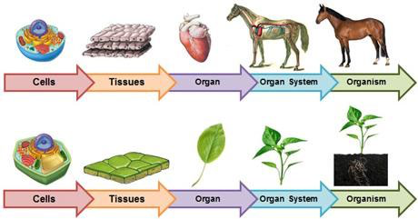
Humans have two communication systems: the nervous system and the endocrine (hormone) system. These control body processes using electrical and chemical signals that pass between cells, but they use different pathways.
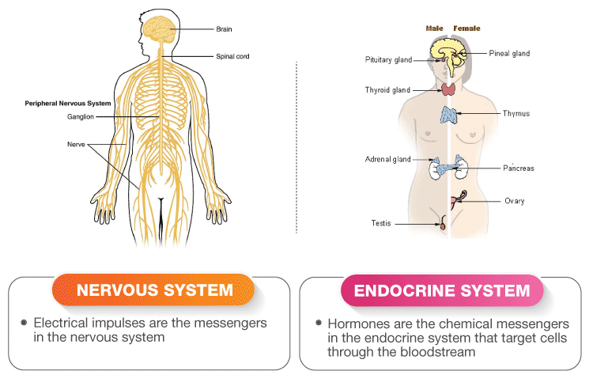
3.2 The Nervous System
The nervous system is very complex. It is divided into two main parts:
- The central nervous system (CNS), made up of the brain and spinal cord. Its main function is to receive information from the body and send out instructions.
- The peripheral nervous system (PNS), made up of all the nerves going to and from the CNS. It connects the CNS to the organs, limbs and skin.
The PNS is at work all the time, even when we sleep. It has two main parts:
- The somatic nervous system controls actions we choose to do (voluntary), like walking, eating or playing an instrument.
- The autonomic nervous system controls processes that happen automatically (involuntary), like breathing, digestion, sweating and shivering. It has two divisions:
- The sympathetic nervous system gets the body ready to react quickly to stressful or scary events ("fight or flight").
- The parasympathetic nervous system controls body functions when we are calm and resting ("rest and digest").
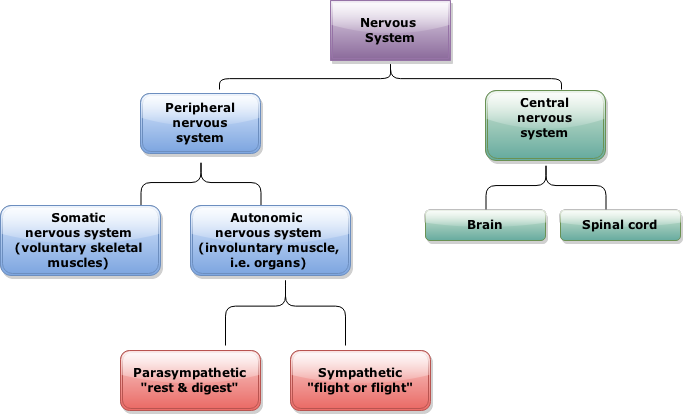
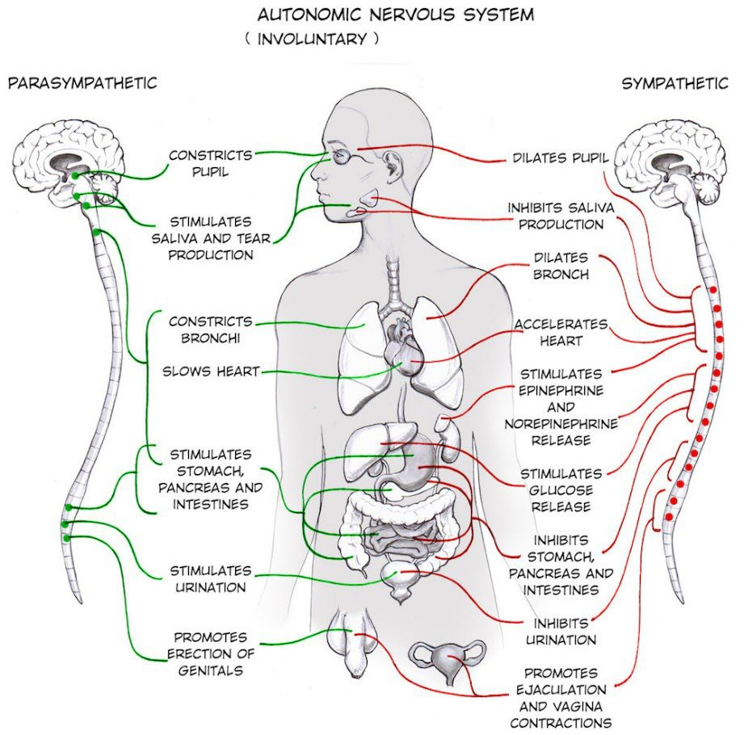
The nervous system detects the external and internal environments using receptors, and responds using muscles and glands (effectors). The five senses gather information about the external environment; internal receptors monitor things such as blood pressure, pH, water and solute concentrations, and internal temperature.
Identify each action as a reflex (automatic) or thinking (voluntary).
| Action | Type |
|---|---|
| Throwing a ball | |
| Jumping at a loud noise | |
| Blinking when dust enters your eye | |
| Eating popcorn | |
| Sneezing | |
| Doing homework | |
| Answering this question | |
| Pulling your hand away from a hot object | |
| Breathing | |
| Smiling |
Breathing is controlled automatically by the brainstem (you can override it for a short time). Smiling is usually voluntary, though people sometimes smile without thinking.
3.3 The Neuron
The basic unit of the nervous system is the nerve cell, or neuron. Its job is to transmit information. There are about 28 billion neurons in the human body, reaching every tissue. Neurons vary greatly in size and shape: the longest runs from the base of the spine to the big toe and is over 1 m long! All neurons have a similar structure.
A basic neuron has a cell body, an axon and many dendrites:
- Dendrites are thread-like branches that increase the surface area of the cell, so it can receive connections from many neighbouring neurons. They carry signals towards the cell body.
- The cell body contains the nucleus.
- The axon is a long fibre that carries the signal away from the cell body to the next cell. It is insulated by a myelin sheath (made by Schwann cells), which speeds up the impulse. Gaps in the sheath are called nodes of Ranvier.
- Axon terminals (synaptic bulbs) at the end of the axon connect to other cells across tiny gaps called synapses. Chemicals called neurotransmitters carry the message across the synapse.
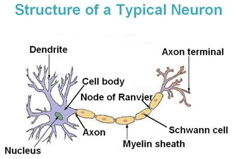
Three types of neuron
- Sensory neurons carry information from receptors to the CNS (spinal cord and brain).
- Interneurons (relay neurons) are found in the CNS and pass messages between neurons, e.g. from sensory to motor neurons.
- Motor neurons carry instructions from the CNS to the effectors (muscles or glands).
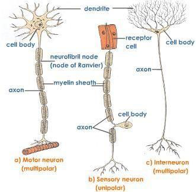
| Sensory (affector) neuron | Motor (effector) neuron | Interneuron | |
|---|---|---|---|
| Where is it found? | PNS | PNS | CNS |
| What does it do? | Carries information from receptors to the CNS | Carries information from the CNS to muscles and glands | Carries information between neurons |
Questions
The human nervous system is made up of billions of cells called .
The CNS is made up of the and the .
What is the role of the PNS?
The PNS is made of all the nerves outside the CNS. It carries messages from receptors in the body to the CNS, and from the CNS out to the muscles and glands, connecting the CNS to the organs, limbs and skin.
Explain the difference between the autonomic and somatic nervous systems.
The somatic nervous system controls voluntary actions that we choose to do, such as walking or picking something up. The autonomic nervous system controls involuntary, automatic processes such as breathing, heart rate, digestion and sweating.
Explain the difference between the sympathetic and parasympathetic nervous systems.
The sympathetic nervous system prepares the body for action in stressful or scary situations ("fight or flight"), e.g. increasing heart rate and dilating pupils. The parasympathetic nervous system controls the body when it is calm and resting ("rest and digest"), e.g. slowing the heart rate and stimulating digestion.
Match each kind of neuron with its function.
Match each description with the correct term.
3.4 The Human Brain
The brain keeps the body in order. It helps control all of the body's systems and organs, and it lets us think, feel, remember and imagine. In general, the brain is what makes us behave as human beings.
Grey and white matter
A section of the brain or spinal cord has darker regions and lighter, almost white regions. These are two types of tissue:
- Grey matter contains mainly cell bodies and dendrites. It interprets and processes information received from inside and outside the body.
- White matter contains mainly axons and their myelin sheaths. It transmits information to and from other parts of the nervous system.
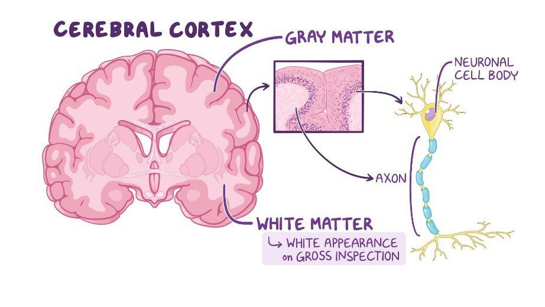
Parts of the brain
The brain can be divided into three main sections: the cerebrum, the cerebellum and the brainstem.
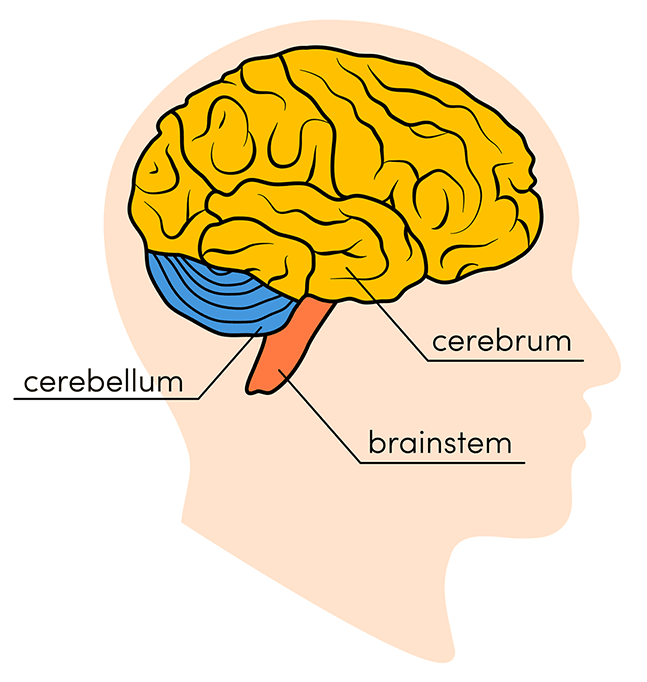
- Cerebrum (cerebral cortex): the largest part of the brain. It controls attention, perception, awareness, thought, memory, language, consciousness and voluntary movement. It has many folds: the ridges are gyri and the grooves are sulci. It is divided into two cerebral hemispheres, each with four lobes:
- Frontal lobes: problem solving, judgement and motor function
- Parietal lobes: sensation (touch, taste, temperature), handwriting and body position
- Temporal lobes: memory and hearing
- Occipital lobes: the brain's visual processing system
- Brainstem: connects the brain and spinal cord. It controls many involuntary functions critical to survival, such as heartbeat, breathing, swallowing and blood pressure.
- Cerebellum: at the base and back of the brain. It is responsible for coordination and balance, giving smooth, balanced movement such as posture and speech.
The hypothalamus produces many important hormones and helps maintain homeostasis (e.g. temperature, blood pressure).
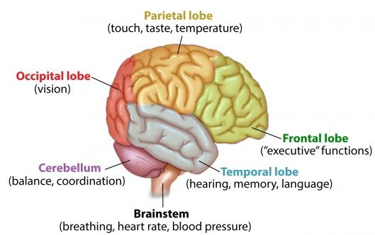
Match each part of the brain to its function.
The cerebrum is made of 2 hemispheres with four main lobes. Match each lobe with its function.
3.5 The Reflex Arc
The classic nerve pathway is:
A stimulus (a detectable change) is picked up by a receptor. Sensory neurons carry the information to the brain (via interneurons), where it is processed and a response is decided. Messages are sent along motor neurons, and the effector carries out the response: a muscle may contract or a gland may secrete fluid.
Not all responses need the brain. One pathway that doesn't is the reflex arc:
- A message travels along the sensory neuron to the spinal cord.
- In the spinal cord, the sensory neuron synapses with an interneuron.
- The interneuron synapses with a motor neuron, which runs out to the effector to produce the response.
Examples of reflexes include the eye blink and the knee jerk.
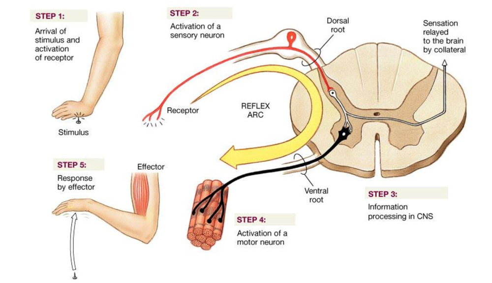
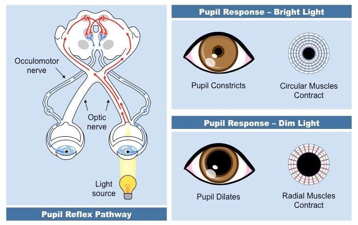
In a reflex arc, the message travels in this order. Choose the correct neuron for each step.
Receptor → → (in the spinal cord) → → effector
What is the function of a reflex arc?
To produce a very fast, automatic response to a stimulus (usually a dangerous one), protecting the body from harm.
Why is it important that messages don't need to travel to the brain in a reflex arc?
Going only to the spinal cord makes the pathway shorter, so the response is much faster. This reduces damage to the body, e.g. your hand is pulled off a hot object before it is badly burnt.
When you move your hand away from a hot object in a reflex, you sometimes feel pain after moving your hand. Suggest a reason for this.
The reflex response is carried out by the spinal cord, without waiting for the brain. A separate message travels up the spinal cord to the brain, which is a longer pathway, so the brain only becomes aware of the pain (and you "feel" it) after your hand has already moved.